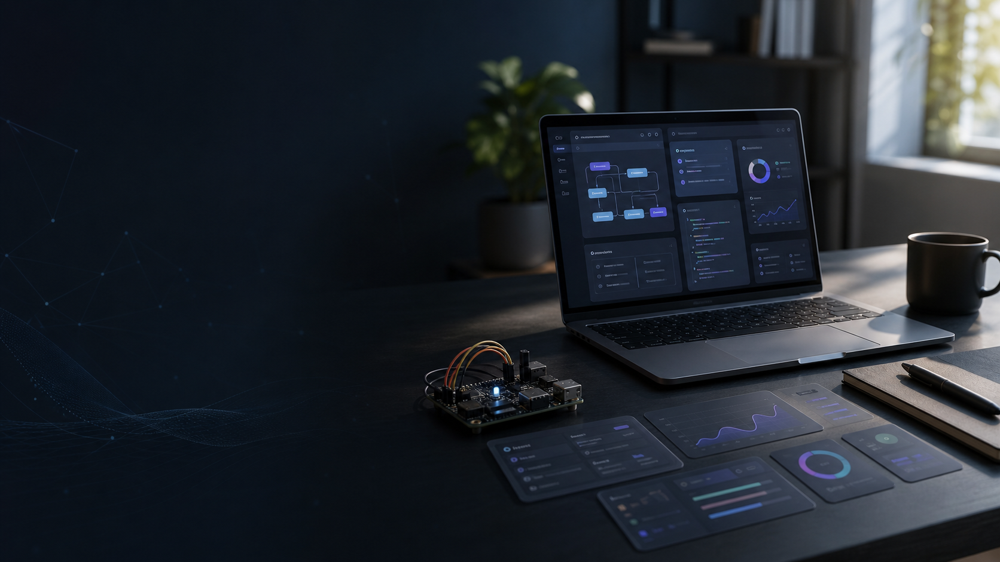

Documented projects

Personal Portfolio
Software, Data & IoT Projects
A curated selection of projects developed to practice, solve real-world problems, and build functional web experiences with a technical focus.
Interfaces, PWAs, and dashboards
Sensors, gateways, and connectivity
Recent Work
Projects
Each card includes the objective, timeline, technologies used, and current status.
Stack
Technologies Used
This portfolio highlights technologies spanning frontend, data analysis, embedded systems, and databases.